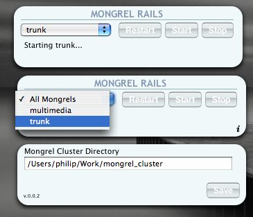

I’ve recently switched over to using a MacBook Pro for work. One of the nice things about that is the ability to run all my Rails projects locally. So I’ve got several different projects and branches of projects checked out and was getting tired of starting/stopping individual mongrels depending on which one I wanted to work on. So, I’ve written my first dashboard widget - Mongrel Rails.
In a nutshell, you tell it what directory all of your mongrel_cluster.yml files live in and then you can start, stop, or restart any or all of them. It’s basically a simple wrapper around “mongrel_rails …. cluster:????? -C /path/to/my/yaml_file.yml”

If there’s enough interest, I plan on adding actual command output so you can look at that if something goes wrong, but I wanted to get this out there sooner rather than later since I figure I can’t be the only one who would find it useful.